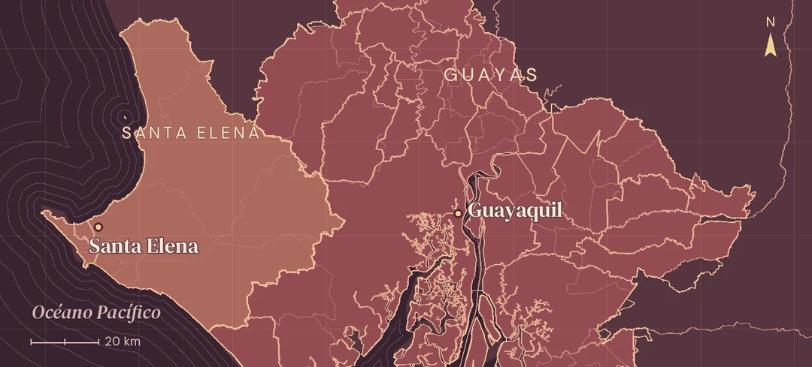

PUNTO DE ANÁLISIS
—de 100
Elige un proyecto en el mapa y encuentra los sectores cercanos donde probar una campaña inmobiliaria.

Cada elección reemplaza el pin anterior.
Toca el lugar en el mapa.
Elige qué importa para tu proyecto. Los pesos de esta ficha también se usan en la comparación regional.
Toca el mapa, selecciona un edificio o ingresa coordenadas para evaluar el sitio.
Elige qué sectores explorar primero y compara su población con la de toda el área alrededor del proyecto.
Cargando los conteos de residentes…
| Sector censal | Distancia al proyecto | Residentes | Grupo de edad |
|---|
INEC · Censo 2022. Se cuenta cada sector completo si su punto interior cae dentro del radio. El CSV incluye todos los sectores del radio e identifica los elegidos.
| Sector piloto | Referencia sugerida | Diferencia de residentes (referencia − piloto) |
|---|
En orden de prioridad, cada sector piloto se empareja con el sector disponible de población más parecida. En un empate se elige la distancia al proyecto más similar y luego el código INEC menor. Cada sector participa una sola vez. Revisa también la oferta inmobiliaria, el acceso y la cobertura publicitaria de cada zona.
Qué medir. Registra el gasto y las visitas agendadas por zona durante las mismas fechas. Compara el costo por visita con los resultados observados al pie de esta ficha.
El criterio «Más residentes» ordena los sectores por población censada. «Cercanía» usa la distancia en línea recta entre el proyecto y el punto interior de cada sector. Los empates de población se resuelven por cercanía. El perfil de edad describe a los residentes censados en 2022. La selección geográfica es una hipótesis para una prueba comercial.
Un sector INEC puede quedar repartido entre varias ubicaciones publicitarias. Revisa la cobertura que admite tu plataforma y el solapamiento de radios antes de contratar la pauta. Google Ads estima la edad y el alcance de sus usuarios.
Ubicaciones y radios en Google Ads · Política de anuncios de vivienda
Elige las edades y compara dónde hay más residentes de ese grupo o dónde representan una mayor parte de la población.
Cargando población censada…
| Área censal | Residentes del grupo | Población total | % del área |
|---|
INEC, Censo 2022. Ambos extremos del rango son inclusivos. El porcentaje divide los residentes del grupo por la población del área. Las zonas agrupan los sectores con cartografía y código publicable. Los totales parroquiales y cantonales también incluyen residentes con ubicación sectorial reservada. En Guayaquil, las parroquias urbanas se publican juntas en la cabecera censal. El mínimo excluye áreas con menos residentes del grupo elegido. Los colores siguen los quintiles de las áreas que cumplen el filtro.
Base de población del INECUn sector censal es el área que delimita el INEC para contar viviendas y personas. Dentro de cada cabecera o parroquia, una zona censal agrupa varios sectores. Sus números se repiten en otras zonas.
Cargando sectores…
| Edad | Residentes de esa edad en el sector | Hogares del sector con representante de esa edad | Hogares en la muestra provincial | Ingreso mensual provincial Mediana · P25–P75 | Capital del préstamo simulado Mediana · P25–P75 |
|---|
Para cada sector se cuentan las personas y los hogares particulares por la edad de su representante. La ENIGHUR aporta el ingreso corriente monetario mensual de los hogares, ponderado con su factor de expansión. El atlas aplica la distribución de cada grupo provincial a su proporción de hogares en el sector. Dos sectores de la misma provincia con igual composición por edad reciben la misma estimación, aunque sus ingresos reales puedan diferir.
P25–P75 contiene la mitad central de los ingresos de referencia. El capital se estima con una cuota mensual fija usando los mismos supuestos a todas las edades. La simulación excluye seguros, comisiones y otras deudas. La capacidad individual, la aprobación de créditos y la intención de compra requieren información adicional.
Guía censal · Cartografía sectorial del INEC · ENIGHUR 2024–2025
Compara el financiamiento observado en Guayas y Santa Elena. El destino indica dónde se usaron los fondos. La residencia del comprador se investiga con consultas o ventas que registren su origen.
Descomprime el archivo mensual de Volumen de crédito de SEPS y selecciona el texto tabulado. Se agregan por DPA los créditos originales de vivienda a personas naturales, hasta los últimos 12 meses disponibles. Solo se guardan los totales y conteos por rango.
| Destino | Créditos totales | Promedio | Créditos sobre el umbral | Rango más frecuente |
|---|
Una cifra única indica un conteo exacto. Dos cifras indican el mínimo y el máximo compatibles con los grupos publicados, su número de créditos, su monto total y, cuando existe, el rango de montos. Un préstamo exactamente igual al umbral queda fuera. Los lugares sin registros se muestran en gris. Los conteos corresponden al período y a las entidades indicadas.
¿Qué servicios necesitas cerca del proyecto? Ajusta la importancia de cada criterio para obtener un puntaje de acceso de 0 a 100. Puedes evaluar un punto del mapa o comparar sitios en toda la región con los mismos pesos.
Cargando la malla de análisis…
Activa un criterio o mueve su barra de 0 a 100. También puedes escribir el peso. El porcentaje indica cuánto cuenta cada criterio entre los activos.
| Punto y cantón | Aptitud / 100 | Escuelas en el radio | Hospitales en el radio | Distancia a vía | Distancia a centro comercial | Distancia a centro urbano | Distancia a atractivo turístico |
|---|
La malla tiene centros en tierra separados por 500 m. El color entre centros es una estimación por distancia inversa. Al tocar el mapa se consulta la muestra cercana. En cada centro se cuentan las sedes educativas y hospitales registrados dentro del radio elegido, incluso al otro lado de un límite cantonal. La densidad es el conteo dividido por el área total del círculo (π × radio²), incluida el agua en la costa. Dos sedes registradas en el mismo predio cuentan por separado.
Para cada tipo de establecimiento, la densidad más alta de toda la malla de Guayas y Santa Elena recibe 100 puntos. Los demás valores se puntúan en proporción. Para el pin se cuentan los establecimientos desde sus coordenadas y se usa la misma escala, con un tope de 100. La vía principal más próxima aporta 100 puntos a distancia cero y pierde puntos linealmente hasta el límite vial. Para los centros comerciales, los centros urbanos y los atractivos turísticos se usa la distancia al lugar cartografiado más cercano. Cada uno obtiene 100 puntos a distancia cero, 50 a la mitad del radio de servicios y cero a partir de ese radio. Así, con un radio de 5 km, un atractivo a 2,5 km obtiene 50 en ese criterio.
La aptitud es el promedio ponderado de los criterios activos. Por ejemplo, dos pesos de 30 y 10 equivalen al 75 % y al 25 % del puntaje. Un peso de cero excluye el criterio. La distancia al atractivo más cercano también se puede consultar cuando el peso turístico es cero.
El filtro territorial cambia los puntos que se comparan y conserva la escala regional. Los círculos representan muestras del territorio. Los resultados dependen del inventario cartografiado, del radio y de los pesos. Las distancias son en línea recta. La capacidad de los establecimientos, el tiempo de viaje y la demanda de vivienda requieren datos adicionales.
Elige el peso y la distancia a la que cada servicio deja de puntuar. Los pesos se normalizan automáticamente.
Examina si cantones cercanos concentran tasas altas o bajas de establecimientos por cada 10.000 habitantes.
Cargando las tasas cantonales…
Compara los precios de colegios particulares y fiscomisionales para un mismo grado. Selecciona un plantel para ver cuánto representa en el presupuesto anual.
Cargando tarifas escolares…
El corte ministerial de mayo de 2026 aporta máximos autorizados para 1.019 de las 1.243 sedes particulares y fiscomisionales en Guayas y Santa Elena, en al menos un nivel. El año lectivo 2026–27 reúne tarifarios y resoluciones fechados. Los guiones del registro y los ceros sin confirmación quedan sin dato.
Una sede con el mismo nombre y las mismas coordenadas cuenta una vez. La cobertura usa como referencia todas las sedes particulares y fiscomisionales cartografiadas del cantón en el régimen seleccionado, incluidos planteles que podrían no ofrecer el grado elegido. Cada precio conserva su fuente. Cada institución (código AMIE) aporta un valor por cantón. Las medianas requieren al menos tres instituciones con el importe documentado.
| Cantón | Sedes de referencia | Con pensión | Mediana mensual | Con matrícula | Mediana de matrícula | Promedio publicado de bachillerato · mayo 2026 |
|---|
La última columna muestra el promedio cantonal de bachillerato publicado por PRIMICIAS con datos ministeriales de mayo de 2026. La fuente no detalla la ponderación ni el número de escuelas para todos los cantones. Fuente y mapa original
El precio corresponde a la ubicación del plantel. Becas, descuentos y desplazamientos entre cantones cambian su relación con el gasto de los hogares. Para investigar demanda de vivienda, contrasta estos datos con consultas o ventas que registren el lugar de origen del comprador.
| Cantón | Provincia | Población | Distancia de referencia | Solicitudes de origen | Operaciones de crédito |
|---|